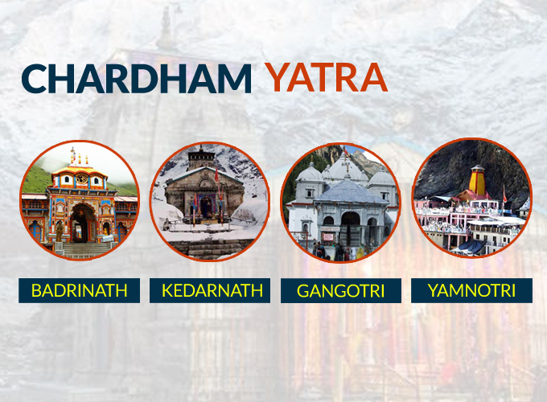

TRAVEL BUDDY
Discover Your Next Adventure
Explore amazing destinations around the world with Travel Explorer.
Explore NowPopular Destinations
JABALPUR TOUR
Some of the important tourist attractions in Jabalpur include: Dhuandhar Falls and Marble Rocks in Bhedaghat, the most famous tourist destination in Jabalpur. Chausath Yogini Temple, Jabalpur Madan Mahal, a fort said to be built by the Gond king Madansahi in 1116 atop a balancing rock.[1] Rani Durgawati Museum, built in 1964 to commemorate Rani Durgavati. The museum hosts ancient relics and sculptures, as well as a collection of items related to the life of Mahatma Gandhi. Kachnar City, famous for a 76 feet (23 m) high Lord Shiva statue, which houses a cavern with replicas of Shivalingam from the 12 important holy shrines of Lord Shiva all over the country.[2] Dumna Nature Reserve Park Bargi Dam Gwarighat Tilwara ghat Tripur Sundari Temple Lameta Ghat Ghughra Falls Dashmesh Dwar Jilhari Ghat Bajnamath Mandir
CHARDHAM YATRA
Get the complete package for Chardham yatra. Book a Chardham tour with the best accommodation. Experience team to guide. Top Destination of Char Dham is a popular tourist destination where a lot of religious people travel for a holy yatra. Situated in the lap of the Himalayas, it is one of the most sought-after pilgrimage spots by the believers of the Hindu religion. In order to make your trip a memorable one, booking the Char Dham tour package is an ideal option. With the tour package, you can easily avail of all the requisites in a hassle-free manner and ensure a successful Char Dham yatra.
12-JYOTIRLINGAS
The 12 Jyotirlingas are sacred shrines dedicated to Lord Shiva, spread across different regions of India. These divine abodes are considered to be self-manifested representations of the Supreme Being in the form of a Linga, symbolizing the infinite nature of Lord Shiva. Pilgrims undertake a significant spiritual journey known as the "Dwadash Jyotirlinga Yatra" to visit all twelve of these revered shrines.
The 12 Jyotirlingas are:
1. Somnath (Gujarat):The first Jyotirlinga is situated on the western coast of India and holds great historical and religious significance.
2. Mallikarjuna (Srisailam, Andhra Pradesh):Located on the banks of the Krishna River, this Jyotirlinga is associated with the story of Lord Shiva and Goddess Parvati.
3. Mahakaleshwar (Ujjain, Madhya Pradesh):Nestled on the banks of the Shipra River, this Jyotirlinga is renowned for its unique idol of Lord Shiva facing south.
4. Omkareshwar (Madhya Pradesh):Positioned on an island in the Narmada River, the Omkareshwar Jyotirlinga is shaped like the auspicious symbol 'Om.'
5. Kedarnath (Uttarakhand):Amidst the snow-clad peaks of the Himalayas, Kedarnath is one of the holiest shrines and a vital part of the Char Dham Yatra.
6. Bhimashankar (Pune, Maharashtra):Nestled in the Sahyadri range, this Jyotirlinga is associated with the legend of Lord Shiva defeating the demon Bhima.
7. Kashi Vishwanath (Varanasi, Uttar Pradesh):Located on the banks of the Ganges, Kashi Vishwanath is one of the oldest and holiest temples dedicated to Lord Shiva.
8. Trimbakeshwar (Nashik, Maharashtra):Positioned on the banks of the Godavari River, Trimbakeshwar is associated with various mythological stories and is a significant pilgrimage site.
9. Vaidyanath (Deoghar, Jharkhand):Also known as Vaijnath, this Jyotirlinga is associated with the legend of Ravana offering his ten heads to Lord Shiva.
10. Nageshwar (Dwarka, Gujarat):Situated near the Dwarkadish Temple, this Jyotirlinga is associated with the story of a demon named Daruka.
11. Rameshwar (Rameswaram, Tamil Nadu):Located on the serene island of Rameswaram, this Jyotirlinga holds immense significance in Hindu mythology.
12. Grishneshwar (Ellora, Maharashtra):The last of the twelve Jyotirlingas, Grishneshwar is believed to have been manifested by Lord Shiva to save a devotee from a dire situation.
MATHURA-VRINDAVAN
Get the complete package for Chardham yatra. Book a Chardham tour with the best accommodation. Experience team to guide. Top Destination of Char Dham is a popular tourist destination where a lot of religious people travel for a holy yatra. Situated in the lap of the Himalayas, it is one of the most sought-after pilgrimage spots by the believers of the Hindu religion. In order to make your trip a memorable one, booking the Char Dham tour package is an ideal option. With the tour package, you can easily avail of all the requisites in a hassle-free manner and ensure a successful Char Dham yatra.

AYODHYA DHAM RAM LALA DARSHAN
Embark on a soul-enriching journey with our Ram Mandir Ayodhya tour packages, meticulously crafted to immerse you in the cultural tapestry of India. Begin your pilgrimage in the sacred city of Ayodhya, where you'll explore ancient temples, ghats, and landmarks steeped in the mythology of the Ramayana. The highlight of the tour is the awe-inspiring Ram Mandir, a testament to India's rich heritage. Marvel at its architectural splendor and offer prayers in this hallowed space. Don't miss the captivating Ganga Aarti at the Saryu River, creating an enchanting evening ambiance. Discover the Chakravyuh Interactive Museum, gaining profound insights into the epic Ramayana narrative. Visit Hanuman Garhi for panoramic views and Kanak Bhawan for its vibrant artistry. Indulge in Ayodhya's local cuisine, savoring its culinary heritage. With comfortable accommodations and expert guides, our tour ensures a seamless blend of spirituality and cultural exploration, leaving you with cherished memories of this divine pilgrimage.
About Us
Welcome to our enchanting travel haven, where the journey is as mesmerizing as the destination! Our travel website is your passport to a world of wanderlust, designed to inspire and guide you on unforgettable adventures. Whether you're a seasoned globetrotter or a first-time explorer, our platform is your go-to companion for discovering the extraordinary. Immerse yourself in a tapestry of destinations, each carefully curated to offer a unique blend of culture, history, and natural wonders. From the sun-kissed beaches of exotic islands to the towering peaks of majestic mountains, our travel website unveils the beauty of the world, one click at a time. Navigate through a user-friendly interface that effortlessly connects you with a wealth of travel information.
Explore comprehensive guides, travel tips, and insider insights that empower you to plan your dream getaway with confidence. Discover hidden gems, local delicacies, and off-the-beaten-path experiences that promise to transform your journey into a cherished memory. Dream, plan, and book seamlessly with our travel website. Dive into a rich collection of handpicked accommodations, ranging from luxury resorts to cozy boutique hotels, ensuring that every stay is as exceptional as the destination itself. Benefit from exclusive deals and travel packages tailored to cater to diverse tastes and preferences.
Embark on a virtual journey through captivating visuals and immersive content, as our website transports you to far-flung corners of the globe. Engage with a community of like-minded travel enthusiasts, sharing stories, tips, and recommendations that transform your travel aspirations into reality. Whether you seek a relaxing beach retreat, a thrilling adventure, or a cultural odyssey, our travel website is your gateway to a world of possibilities. Let the exploration begin, and may your travels be filled with endless wonders and cherished moments!